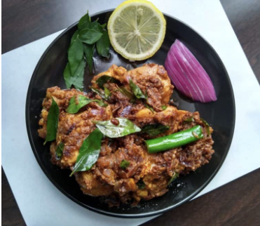

Andhra Chicken Fry Recipe
Andhra Chicken Fry, also known as Kodi Vepudu, is a popular South Indian dish known for its rich flavors and spicy
taste.
This dish is made with tender chicken pieces marinated in aromatic spices and cooked to perfection with a unique
blend of
roasted masalas. Perfect as a side dish or a main course, Andhra Chicken Fry pairs wonderfully with steamed rice
or chapati.
It's a must-try recipe for anyone who loves bold and authentic Indian flavors!
Preparation
- To make the chickenfry masala, on a mediumheat dry roast the following spices in a steel pan until aromatic.
Later cooll, make a fine powder and use all of the masala in the recipe.
- 2 tablespoons Coriander seeds
- 2 inch cinnamon piece
- 6 Cloves
- 4 Green Cardamom(elachi)
- 1/2 tablespoons Cumin seeds(Jeera)
- Add the following ingredients to a large pot
- 1/2 kg Chicken with bone
- 1 tablespoons Leon juice
- 1/4 tablespoons ground turmeric
- 1 tablespoons red chili powder
- 11/2 tablespoons Garam Masala
- 11/2 tablespoons Chicken fry Masala
- 1 large onion (chopper)
- 1 tablespoons Ginger Garlic paste
- 1 tablespoons Ghee
- 1/2 tablespoons salt
- Pour 2 tablespoons water. Mix well to marinate the chicken.place the pot on the stove and begin to cook on a
medium heat. Chickenwill begin to ooze out moisture,cover and cook on a low heat untill the chickenis soft and
almost fully cooked. Once donee you will still see some liquids in the pot. It is just okay to retain that and
as we are going to evaporate it while stir frying.
- FRY the chicken
- Fry the chicken along with the thick masala for 3 to 4 min until it begins to smell aromatic. the masala
should coat the chiken. if the pan looks too dry, you may add a little ghee to the hot pan
- Garnish chickenfry with fresh coriander leaves. Sprinkle some lemon juice and serve with rice
and rasam/curry alongside sliced onions